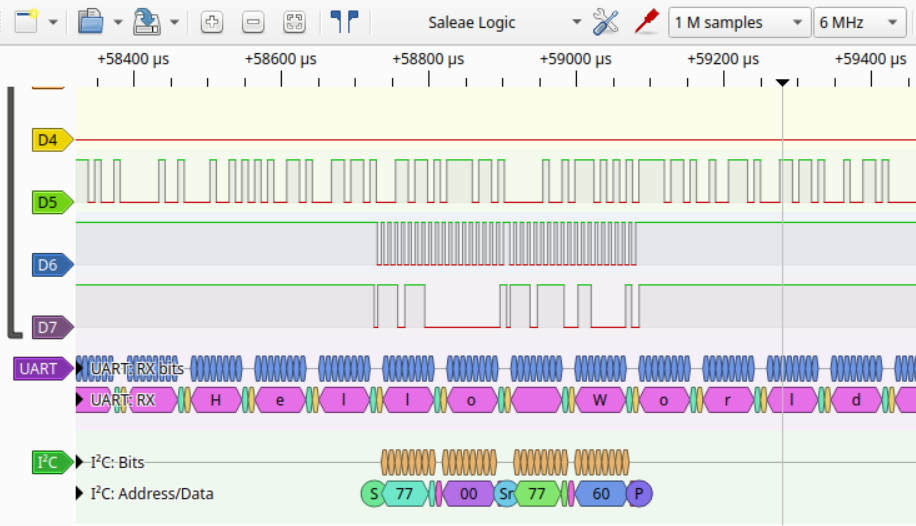
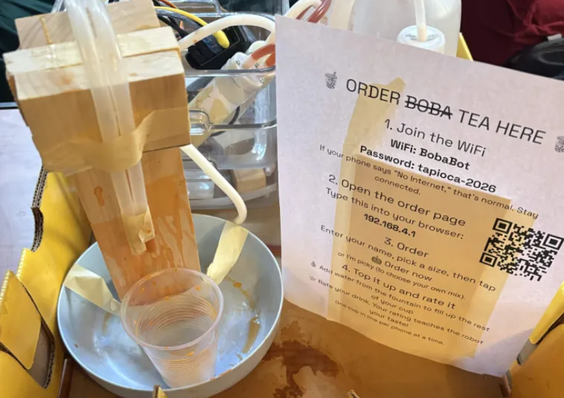

GE Aerospace
Avionics Systems Engineering Co-op
- Earned co-op offer by interview at the GE Aerospace LIFT Summit, one of 61 attendees selected from 3,800+ applicants.
Electrical engineering student at Brown (Class of 2029, 4.0 GPA). I build embedded systems from the register level up: bare-metal firmware in C and Ada, brought up and verified on real hardware.
Incoming Avionics Systems Engineering Co-op at GE Aerospace. Always happy to talk firmware, hardware bring-up, rockets, or weird side projects.


Peripheral and device drivers are written directly against the RP2040 datasheet. The Pico SDK supplies only the second-stage bootloader, the linker script, and the C runtime. Everything was verified on hardware with OpenOCD, CMSIS-DAP, and a logic analyzer, including floating-point temperature and pressure compensation from the Bosch datasheet.
The host build compiles the BMP390 driver with the native compiler and swaps in software fakes for the I2C and SysTick layers at link time, so NAK handling, error paths, and timeouts can be tested without hardware. GitHub Actions cross-compiles every firmware target for both MCUs and runs the suite on every push.
Re-testing on hardware found a BMP390 register whose power-on value doesn't match the published datasheet. The repository documents the discrepancy, the evidence that the error is in the documentation rather than the driver, and why the host test suite couldn't have caught it.
The STM32G431RB is the MCU for the flight computer. Its startup path is hand-written at the register level: linker script, vector table, FPU enable, and reset handler, plus a 144 MHz clock tree verified by measuring its frequency directly. The SysTick driver runs unchanged on both the Cortex-M0+ and the Cortex-M4F.
The STM32 UART and I2C drivers implement the same public headers as the RP2040 versions, with ST's HAL as the backend. The HAL runs on the project's own clock and SysTick timebase instead of taking them over. The BMP390 driver compiles unchanged on top of them and passes its full on-target suite on the STM32, which is the point of the portable layer. The STM32 run also reproduced the datasheet discrepancy on a second I2C implementation. When UART output didn't arrive, reading the peripheral registers over SWD showed the firmware was transmitting correctly and traced the fault to board-level pin routing.

| Measurement | Value | Unit |
|---|---|---|
| Apogee | 377 | m AGL |
| Peak accel, boost (indicative)* | 18.1 | G |
| Peak accel, ejection (indicative)* | 22 | G |
| Flight sample rate (bench: 100+) | 4.9 | Hz |
| Continuous logging | 24.96 | h |
| Records / dropped | 438,858 / 0 | samples |
* Above the LSM9DS1's specified ±16 G linear range, so these values are indicative rather than calibrated.
The BMP390 and LSM9DS1 talk over I2C, and the logging pipeline writes to a W25Q128 SPI flash, with sensor compensation applied offline in Python. The system ran at 100+ Hz on the bench, but about 21 hours of storage, drive, and pad wait had to fit in 16 MB, so I traded sample rate for endurance and flew at 4.9 Hz.
Beyond the SPI chip-select truncation and the 1.5× scaling error, debugging covered I2C addressing, SPI clocking, UART data loss, and power sequencing at both the hardware and firmware layers.
The flight set two requirements for the custom STM32G431 flight computer I'm building. First, arm on launch detect with a circular pre-buffer, so the storage budget doesn't dictate the flight sample rate. Second, add a dedicated high-G accelerometer, since the flight exceeded the IMU's linear range.

| Circuit Design & Hardware | Schematic capture & PCB layout (KiCad), component selection, wiring diagrams, soldering |
| Embedded Systems | Bare-metal firmware, register-level programming, device drivers, interrupt handling, Arm Cortex-M0+/M4F, RP2040, STM32G4, I2C, SPI, UART, SPI flash logging, sensor data acquisition |
| Debugging & Test | Oscilloscope, logic analyzer, NanoVNA, multimeter, bench power supply, OpenOCD, SWD, Unity/CTest, pytest |
| Languages | C, Ada, Python, MATLAB, Java, OCaml, Racket |
| Software & Tools | Git/GitHub, CMake, GitHub Actions CI, Linux/bash, arm-none-eabi-gcc, NumPy, pandas, Matplotlib |
| Mechanical & CAD | SolidWorks, Fusion 360, FEA (SolidWorks), CAM, 3D printing, laser cutter, sheet metal fabrication |
Sc.B. Electrical Engineering · 4.0/4.0 · Expected Dec 2029
| COMPLETED | Data Structures & Algorithms, Statics & Dynamics, Ordinary Differential Equations, Linear Algebra |
| IN PROGRESS | Fundamentals of Computer Systems, Electricity & Magnetism, Statistics, PDEs |
| SPRING 2027 | Electrical Circuits & Signals |
| Item | Year |
|---|---|
| Amateur Radio Technician License | 2026 |
| Brown UTRA Research Award | 2026 |
| Taco Bell Ambition Accelerator Grant | 2024 |
The projects and pursuits that keep me curious outside the classroom and lab.
Licensed as a Technician in 2026. I got into it for the RF theory and antenna design, and it ties directly into my antenna work at Brown Space Engineering.
Bread, homemade pasta, anything where the process matters. Recipes are just specs with tolerance ranges.
Translated Korean, Chinese, and Japanese novels: web novels, light novels, whatever a good translator has picked up. Always something in progress.
Literally spinning plates on sticks. A surprisingly good full-body workout, and the focus it takes is genuinely meditative.
I'm interested in embedded software, firmware, and hardware engineering opportunities across industries, and always happy to chat with people building things where code meets hardware.
| margeauxcorrigan@gmail.com | |
| linkedin.com/in/margeaux-corrigan | |
| GitHub | github.com/MargXX |
| Resume | resume.pdf ⤓ |